Настройка сети CentOS 7
Настройка во время установки
Первый и самый простой вариант настройки сети - это настройка во время установки. На экране настроек нам нужно найти раздел System и нажать на Network & Host name. 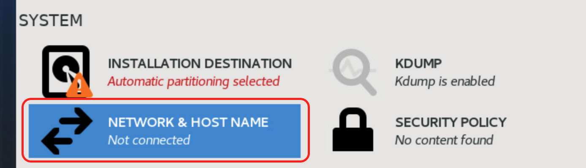 На экране настроек сети, есть несколько параметров: 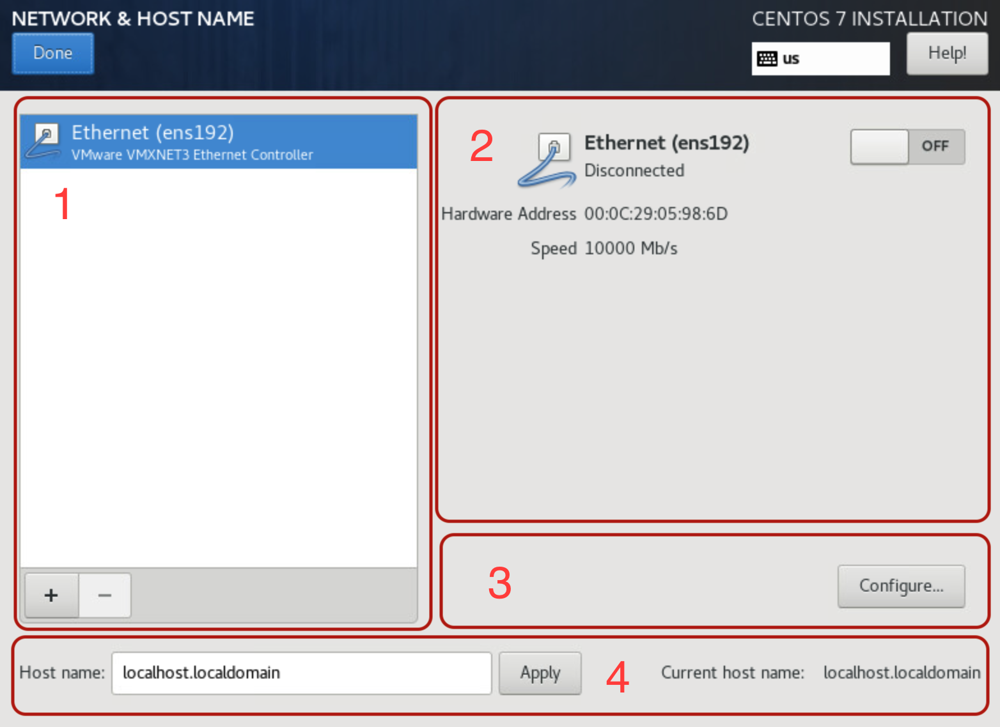
- 1. Список сетевых интерфейсов.
- 2. Информация об выбранном интерфейсе и кнопка включения-выключения.
- 3. Настройки выбранного интерфейса.
- 4. Название хоста.
После нажатия на кнопку включения(2), выбранный интерфейс станет активным и получит настройки по dhcp. 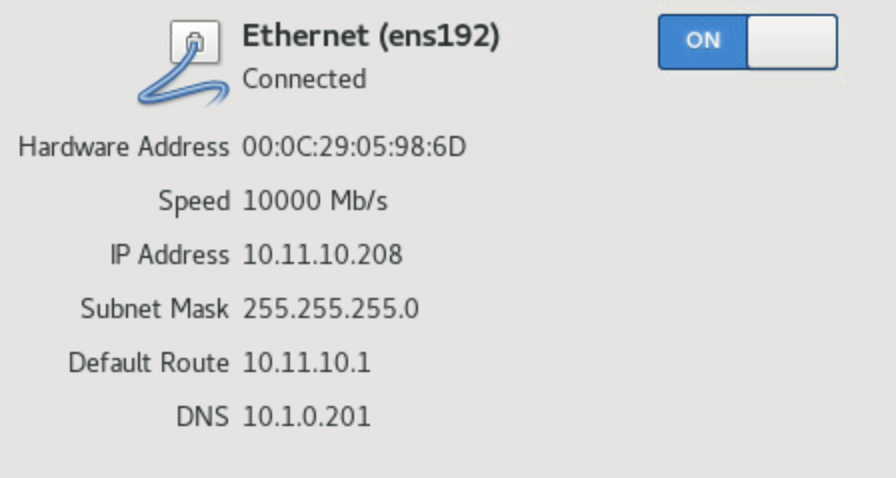
Если вам нужно сменить настройки, то вы можете нажать на кнопку Configure(3). Попав в окно дополнительных настроек, вы сможете изменить имя интерфейса, выбрать режим настроек Manual, задать ip-адрес, задать dns-серверы. И после выполнения всех настроек нажать Save. 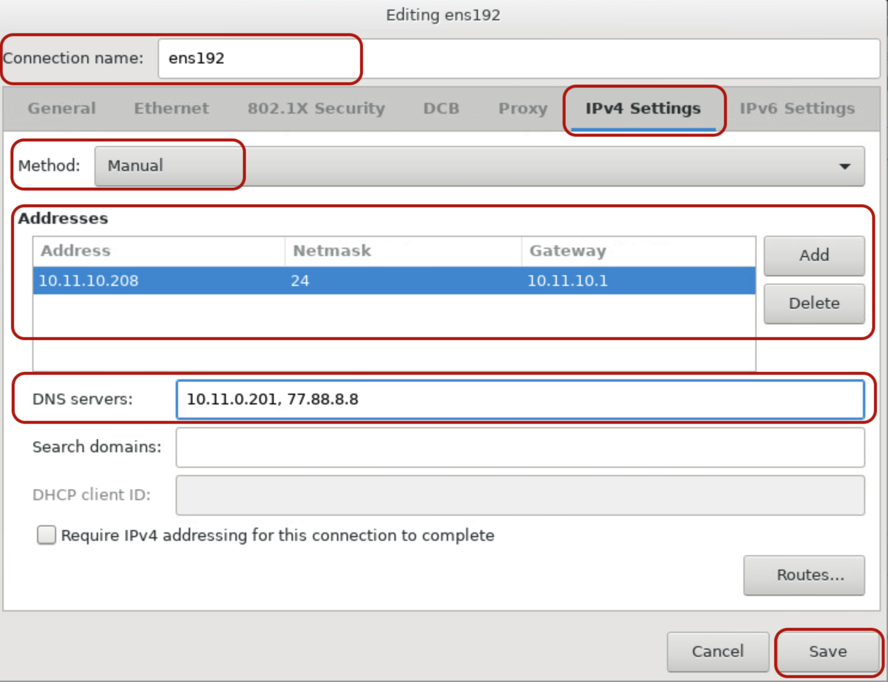
Для изменения имени системы вводите в поле Host name новое имя и нажимаете кнопку Apply.
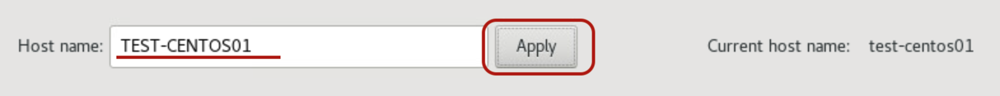
Для продолжения других настроек нажимаем на кнопку Done.
На этом настройки сети во время установки закончены.
Настройка сети в установленной системе
Если вам нужно просмотреть или изменить конфигурацию сети в уже установленной системе, для просмотра вы
можете использовать команды ip a или ip addr.
После ввода одной из команд вы увидите на экране все ваши сетевые интерфейсы и их конфигурацию.
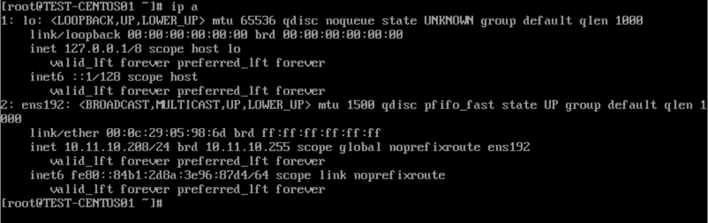
Из данной информации мы увидели что наш сетевой интерфейс называется ens192.
Названия интерфейса может отличаться.
Файлы сетевых настроек находятся в директории etc/sysconfig/network-scripts, переходим в нее
командой cd /etc/sysconfig/network-scripts.
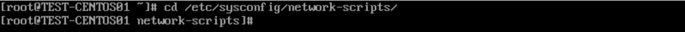
Далее нам нужно открыть файл с сетевыми настройками, стандартный текстовый редактор в CentOS 7 называется
Vi.
Вводим в консоль команду Vi ifcfg-ens192 и откроем файл с сетевыми настройками.
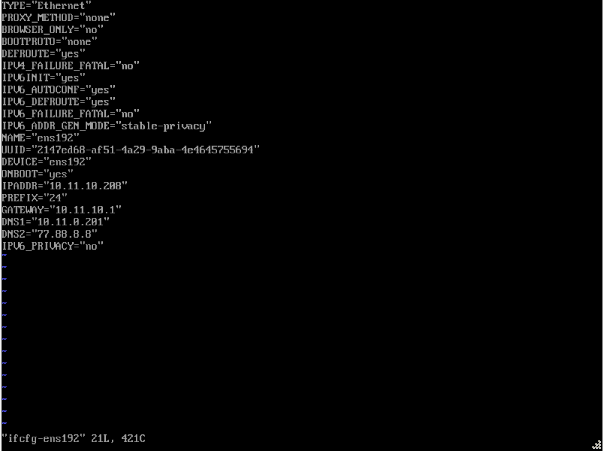
Названия файла может отличаться.
В данном файле нас интересуют несколько строк:
- 1. BOOTPROTO - способ назначения ip-адреса
- 2. IPADDR - ip-адрес
- 3. PREFIX - префикс подсети
- 4. GATEWAY - шлюз сети
- 5. DNS - dns-серверы
В данный момент у интерфейса статические настройки, для изменения их на динамические, нужно изменить файл в
соответствии со скриншотом и сохранить:
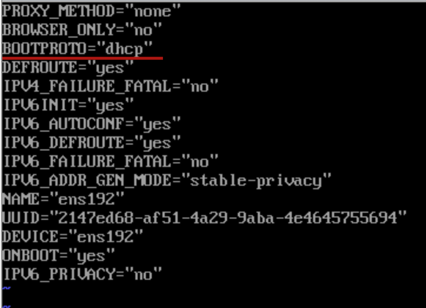
Для того чтобы настройки применились, нужно перезагрузить службу командой
systemctl restart network и сразу проверим сетевые настройки,
слово dynamic указывает, на то что настройки получены по dhcp.
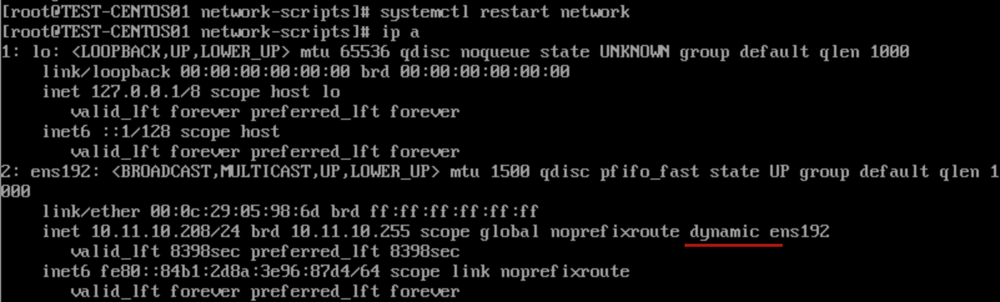
Для настройки статического получения ip-адреса изменяем файл к предыдущему состоянию, указывая нужный
ip-адрес, префикс, шлюз и dns-серверы:
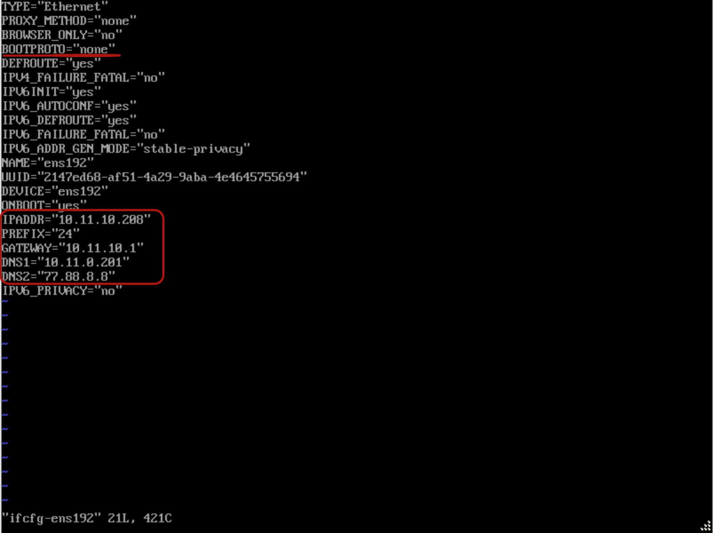
И не забываем перезагрузить службу командой systemctl restart network.